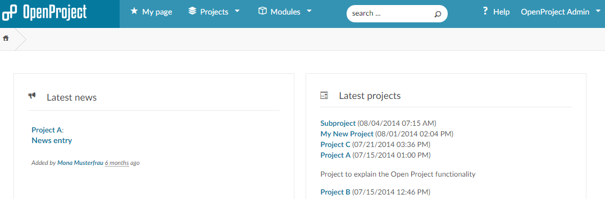

About
Peter Chen
I'm currently a 23-years-old Front-End Developer Intern who is familiar with project management tools like Jira and proficient in Git commands. My major duty is website development using JavaScript Framework-Nuxt.JS as well as database hosting, thus full-stack Website building Skills. I also have experience in Python and Java. A pursuer of optimal solutions with the ability to test modules and writing testing reports. Great analytical skill and unique insight in seeking the origin of the problems.
Projects Portfolio

FRONT END DEVELOPER INTERNSHIP
MOOCADS.COM
- Translating customers' needs to functional and aesthetics requirements documents for thorough test feedback.
- Independently building commercial websites for customers using Wordpress, Vue.JS, with some help from supervisors.
- The duty includes heavily writing and debug of HTML/CSS and javascript.